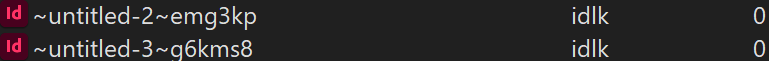
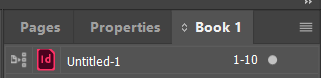

Tördelés az Impulzusnál
Ha elkészült a tördelési táblázat, megkezdődhet a tördelés. A kész újság több dokumentumból áll, ezeket egy könyvbe (Book) szedjük.
Fontos
Egy dokumentumban csak egyetlen szín (azaz kategória) lehet, a kategóriák színezése miatt.
Kategóriánál kisebb részekre, akár oldalakra is lehet bontani, ez számonként eltérhet.
Mappaszervezés
D:\#Újság\
ReDesign: minden kiinduló fájl és erőforrás (képek, font stb.)- évenként és számonként külön a mappák, azon belül
GrafikaExport- a könyv (
.indb) - a szeletek (
.indd) - alkalmanként egyébb mappák
Lock fájlok

Ha ehhez hasonló lock fájlokat látsz, akkor azt a dokumentumot éppen valaki szerkeszti. Amíg be nem zárja, addig más nem fér hozzá.
Feleslegesen ne hagyjunk nyitva dokumentumokat!
Hogyan kezdj neki
-
legyen nyitva az adott számhoz tartozó könyv
- benne
- a borítóhoz tartozó dokumentum
- a kategóriákhoz tartozó dokumentumok
- ebből nem biztos, hogy megvan mind, ha nincs meg, ami éppen kell, másold le a kiinduló fájlt a
ReDesignmappából
- ebből nem biztos, hogy megvan mind, ha nincs meg, ami éppen kell, másold le a kiinduló fájlt a
- legyen a borító a stílus forrása (kis ikon az indesign file logó mellett)
- 
- benne
-
az oldalak legyenek megfelelően beállítva
Pages > Numbering & Section Options- első oldal és terjedelem legyen beállítva
- a
Section Markerlegyen a kategória címe - az oldalak kövessék a K-Kategória mesteroldalt
-
a
ReDesignmappában található az Impulzus Design Library- először csinálj magadnak egy személyes másolatot (hagyhatod itt, csak legyen benne a neved)
- érdemes ezt is megnyitni, és valahova kitenni
Impulzus könyvtár
avagy Design Library
Ez egy .indl fájl, ami tartalmaz pár előre definiált elrendezést, címsorokat, szövegdobozokat stb.
Nyissuk meg és tegyük ki valamelyik panelre.
Válasszuk ki a kívánt elemet és húzzuk be a dokumentumba.
Ügyeljünk, hogy illeszkedjen a margókhoz és a dokumentum széleihez!
Magyarázat:
J: jobb oldalB: bal oldalM: mindkét oldalon működik- általában van egy főcím, egy alcím, egy bevezető és a két hasábban a szöveg törzse
- vannak erre egyesített elemek, de egyesével is berakhatjuk
- figyeljünk, hogy az elemek szélei érjenek össze (a margók jól be kéne legyenek állítva)
Láthatatlan karakterek
Az oldalfüggetlenség érdekében több helyen is használok horgonyokat. A horgonyok szépséghibája, hogy láthatatlan karakterekként vannak benne a szövegben. Ezek általában a legelső karakter előtt vannak, ezért ha mindent kitörölsz, el fognak tűnni a díszítő elemek is.
Főbb érintett dolgok: - főcím - alcím - bevezető szöveg - színes szövegdoboz - képaláírás szövegdoboz
Rétegek
A kiinduló fájlok valószínűleg tartalmazni fognak rétegeket:
- Előtér: ami minden esetben legfelül kell legyen
- Munkaterület: a legtöbb szöveg és alapesetben minden, ami nem máshova megy
- Grafikák: képek, illusztrációk, stb.
- Háttér: amit mindenképpen hátra szeretnél tenni, érdemes lezárni, ami fix
Stílusok és egységesség
Amihez csak tudunk használjunk stílusokat, mintákat, könyvtári elemeket stb. Ha valamilyen formázás egynél többször előfordul, az egy jó jel, hogy stílust kéne használni. Ha még nincs, csinálj, és/vagy szólj a főtördelőnek. Esélyes, hogy később ez még jól fog jönni.
- egyedileg kevert színek helyett használjunk színmintákat és színárnyalatokat
- szöveghez használjunk bekezdésstílusokat, csak indokolt esetben formázzuk egyedileg
- linkekhez és szövegen belüli kiemelésekhez karakterstílusok
- színes és díszített szövegdobozokhoz objektumstílusokat
- (az érdeklődőknek pedig még táblázat és tartalomjegyzék stílusokat is tartogat a kiinduló fájl)
- ha nem találod a stílusokat vagy a palettát, ellenőrizd, hogy szinkronizálva vagy-e a könyvvel, és hogy jó kiindulófájlból dolgozol
Stílus segédled
nem feltétlen up to date
Bekezdésstílusok
[Basic Paragraph]: ő adja a betűtípust, a nyelvet, és kikapcsolja a szótagolást_ősök: őket nem használjuk, de ők lesznek minden öröklés csúcsán_színes: elég lesz őt átszínezni majd, és minden érintett szöveg vele színeződik_címsor: főcímek, kategóriacímek stb._szöveg: folyószöveg, tőle származik a szótagolás
alap: rájuk sem lesz gyakran szükségedcikk: tördelőként ezeket fogod a legtöbbet használni, a legtöbbjük adja magátpáros/páratlan?: a fejezetcímek kicsit furcsán vannak megoldva, ezért attól függően, hogy hány sorban fér el kell a megfelelő stílust használni
kép: képek alá kerülő szöveg stílusai, ha minden igaz, ehhez van egy példa a Design Librarybenextra: ritkán előforduló, de már valaha előfordult dolgoknak
Karakterstílusok
link: hivatkozásokhozkiemelés: szövegen belüli kiemeléshez
Objektumstílusok
_szín: add ezt a stílust minden dobozhoz, aminek szeretnéd hogy a kategória színével együtt változzon majd a színe
Táblázat- és cellastílusok
Ha valaha is ilyenre vetemednél. Csináltam ezeknek is stílust, de elég, ha csak tudsz róla, hogy van ilyen.
Képek
- körbefutás
- szögletes képekhez kb. 3-5mm
- szabad formáknál akár 5mm is, ahogy jól néz ki
- grafikákat vektoros formátumban (
.svg), ha létezik ilyen változat - mellőzzük a díszes képkereteket
- a lekerekítés legyen egységes, vagy sehol, vagy mindenhol, de akkor ugyanannyi (jelenleg nem használunk ilyet)
- fotók forrása legyen megjelölve
- a SPOT-ot nem szoktuk egyesével minden képhez megjelölni, őket külön megemlítjük az elején
- szabad formájú körbefuttatott képekhez külön formákat csak indokolt esetben, különben
Pen Toolhasználata
Kép a szöveg mögött
Légyszi ne. A szöveg mögötti képek nagyon zavaróak tudnak lenni, és nagyon ritkán néz ki jól. Ha teljes oldalas háttér van, akkor is ügyeljünk rá, hogy egyszerű, alacsony kontrasztú rész legyen csak a szöveg alatt, maradjon könnyen olvasható. Az, hogy egy félig áttetsző, világos doboz van a szöveg és a kép között, egy tünete ennek a hibának, ezt is kerüljük.
Egyéb kerülendő dolgok
- körbefuttatás miatt széthúzott egyszavas sorok
- törekedjünk a margók betartására, de az 5mm-es margókon kívül soha ne menjünk
- kép túl közel a szöveghez, vagy kép a szöveg mögött: állítsunk be margókat és helyes körbefutást
- túl sok kép, vagy túl sok szöveg egy oldalon: találjuk meg az egyensúlyt
- egyetlen szótag egy sorban, vagy aránytalanul rövid sorok
- rövid szavak automatikus szótagolása